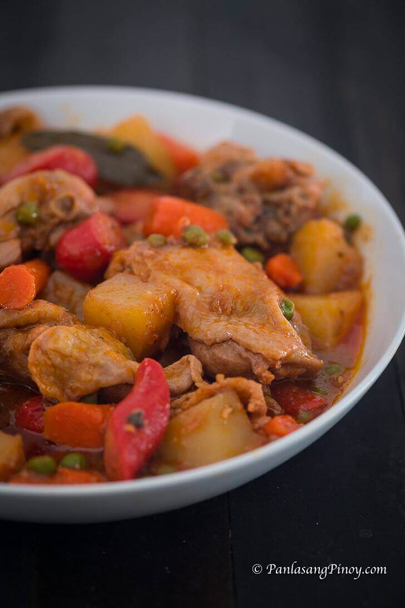
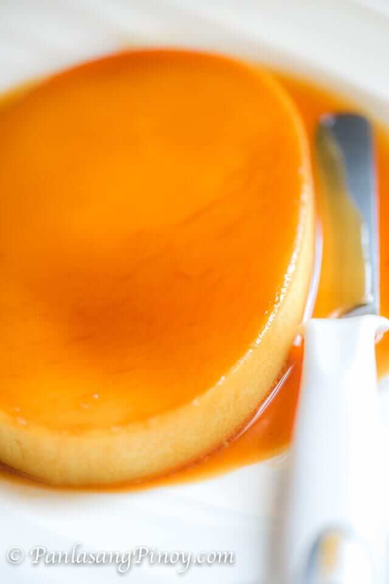

Double Chocolate Chip Cookies

These cookies are a family favorite. They are soft and chewy, and the perfect amount of chocolate. They are also very easy to make!
My daughter learned to make these cookies at a baking camp at Zingermanns and has tweaked the recipe to fit the taste buds of her siblings. They are extremely sugary so the salt helps to balance it. Note, these cookies are best eaten very quickly.
Ingredients
- 1 cup butter
- 1 cup sugar
- 1 cup brown sugar
- 2 eggs
- 2 tsp vanilla
- 2 cups flour
- 1 cup cocoa powder
- 1 tsp baking soda
- 1 tsp salt
- 1 cup chocolate chips
Directions
- Preheat oven to 350 degrees
- Cream butter and sugars together
- Add eggs and vanilla
- Mix in flour, cocoa powder, baking soda, and salt
- Stir in chocolate chips
- Drop by spoonfuls onto cookie sheet
- Bake for 10-12 minutes
Chicken Afritada
This Filipino recipe is super nostalgic for me. It's a comforting tomato-based stew with chicken, tomatoes, potatoes, and carrots served over rice.
This is a really good dish to meal prep in the winter! It always tastes better on the second day.
Ingredients
- 1 ½ lbs. Chicken Thighs cut into serving pieces
- 2 piece potato cubed
- 1 piece carrot sliced
- 8 oz. tomato sauce
- 3 pieces hotdog sliced
- ½ cup green peas
- 3 pieces bay leaves
- 1 piece red onion chopped
- 2 teaspoons garlic minced
- 3 cups chicken broth
- ½ teaspoon sugar
- 3 tablespoons cooking oil
- Salt and ground black pepper to taste
Directions
- Heat the oil in a cooking pot. Saute onion and garlic until the onion softens.
- Season chicken with salt, pepper, and other spices to taste.
- Add chicken. Cook for 30 seconds. Turn it over and cook the other side for another 30 seconds.
- Pour tomato sauce and chicken broth. Cover. Let boil.
- Add dried bay leaves. Cover the cooking pot. Continue to cook in medium heat for 30 minutes.
- Add carrot. Cook for 3 minutes.
- Add potato. Cover the pot and cook for 8 minutes.
- Add green peas. Cook for 2 minutes or until potatoes & carrots are fork soft
- Season with salt and ground black pepper to taste
Leche Flan
This Filipino dessert recipe is another super nostalgic one!
A characteristic of Filipino flan compared to its counterparts is it is strained many times, resulting in a very creamy, silky texture.
Ingredients
- 10 eggs
- 1 can condensed milk (14 oz)
- 1 cup fresh milk or evaporated milk
- 1 cup granulated sugar
- 1 teaspoon vanilla extract
Directions
- Using all the eggs, separate the yolk from the egg white (only egg yolks will be used).
- Place the egg yolks in a big bowl then beat them using a fork or an egg beater.
- Add the condensed milk and mix thoroughly.
- Pour-in the fresh milk and Vanilla. Mix well.
- Strain the egg/milk mixture through a cheese cloth.
- Put the mold (llanera) on top of the stove and heat on low.
- Put-in the granulated sugar on the mold and mix thoroughly until the solid sugar turns into liquid (caramel) having a light brown color. Note: Sometimes it is hard to find a Llanera (Traditional flan mold) depending on your location. I find it more convenient to use individual Round Pans in making leche flan.
- Spread the caramel evenly on the flat side of the mold.
- Strain the egg/milk mixture through a cheese cloth once again.
- Wait for 5 minutes then pour the egg yolk and milk mixture on the mold.
- Tap the mold against the counter gently, to release any excess air from the mixture.
- Carefully cover the mold(s) with aluminum foil.
- Steam for 30-35 minutes, or until a toothpick comes out cleanly from the center.
- Let cool then refridgerate until ready to flip and serve!